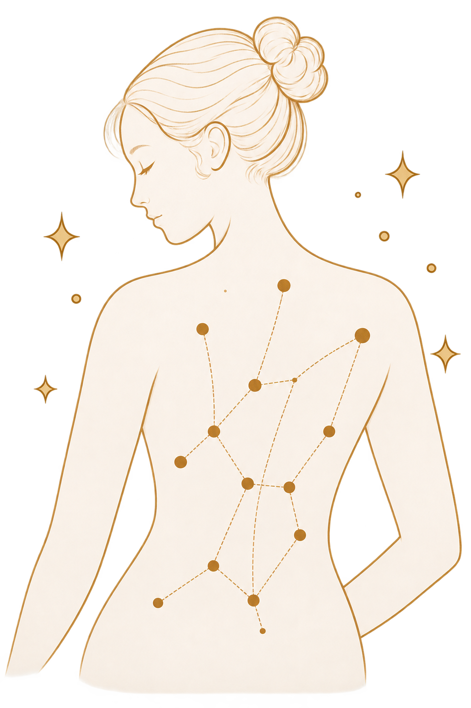
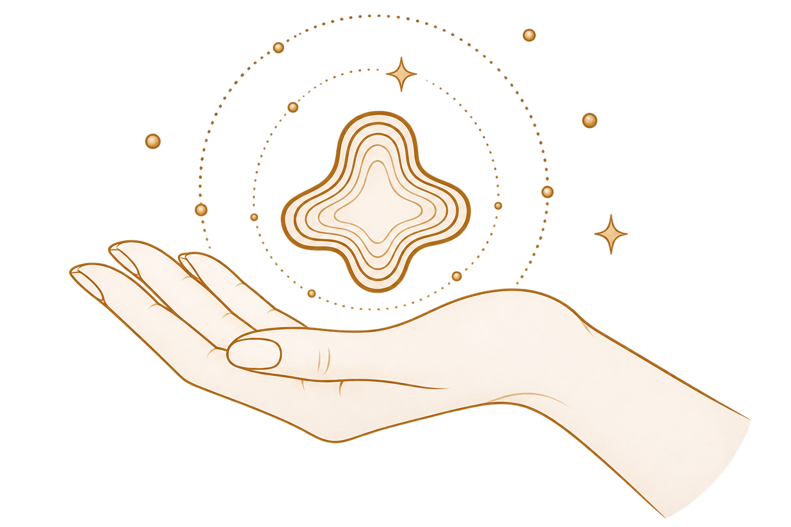
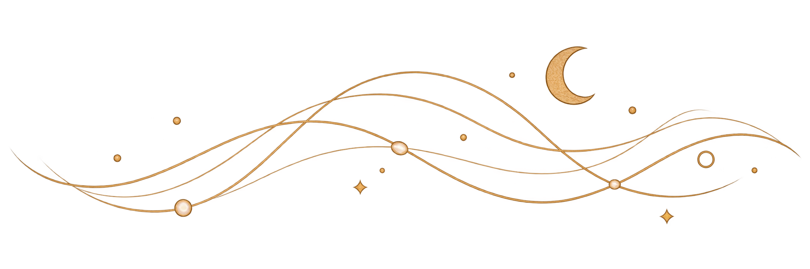

Прямо сейчас внутри вас бьётся сердце. Движется воздух. Продолжается работа органов. Организм поддерживает температуру, расходует энергию, реагирует на то, что происходит вокруг.
Большую часть этого вы, скорее всего, не замечаете.
Вы не следите за каждым ударом сердца. Не прислушиваетесь постоянно к желудку. Не думаете о каждом вдохе и выдохе. И всё же стоит на мгновение обратить внимание внутрь — и что-то вдруг становится заметным.
Сердце.
Дыхание.
Лёгкое напряжение в плечах.
Или, возможно, голод, который всё это время был где-то рядом, но стал очевидным только сейчас.
Мы привыкли говорить о чувствах, которые связывают нас с окружающим миром: зрении, слухе, запахах, прикосновениях. Но существует и другой, менее заметный мир — мир ощущений, которые приходят изнутри.
Учёные называют процессы восприятия и обработки внутренних сигналов организма интероцепцией. Это не одно отдельное «шестое чувство» и не мистическое умение особенно хорошо слышать своё тело. Современная наука рассматривает интероцепцию как сложную систему: нервная система получает информацию о внутреннем состоянии организма, обрабатывает её, объединяет с другой информацией и в некоторых случаях делает частью нашего сознательного опыта.
У нас есть внутренний мир ощущений
Иногда он говорит довольно ясно.
Мы чувствуем голод. Жажду. Наполненность желудка. Замечаем, как изменилось дыхание. Можем почувствовать учащённое сердцебиение или внутреннее тепло.
Но многое из того, что происходит внутри, остаётся за пределами нашего внимания.
И, возможно, именно поэтому собственное тело иногда способно удивлять нас. Мы живём внутри него всю жизнь — и всё же можем внезапно заметить ощущение, которое словно появилось только сейчас.
Хотя на самом деле оно могло быть с нами уже некоторое время.
Современные исследования показывают, что интероцепция включает как сознательные, так и неосознаваемые уровни обработки информации. При этом учёные всё чаще говорят не об одной простой способности «чувствовать тело», а о нескольких связанных процессах: самих сигналах, их восприятии, обработке и более высоком уровне — попытке понять, что эти ощущения могут означать.
Возможно, поэтому вопрос «хорошо ли я чувствую своё тело?» не так прост, как кажется.
Можно очень быстро заметить голод и совершенно не обратить внимания на усталость. Можно чувствовать собственное дыхание, но редко замечать сердцебиение. У разных внутренних ощущений — свои особенности и, вероятно, разная степень заметности для каждого человека. Исследователи продолжают обсуждать, как именно измерять разные стороны интероцепции и можно ли вообще свести их к одному показателю.
Поэтому, возможно, у каждого из нас есть своя карта внутренних ощущений.
Где-то линии прорисованы отчётливо.
А где-то остаются почти незаметными.
Почему мы не замечаем всё, что происходит внутри?
Если остановиться и прислушаться к себе, может показаться странным: внутри организма постоянно происходит огромное количество процессов. Почему же мы не чувствуем их все?
Вероятно, потому, что ощущать и осознавать — не одно и то же.
Организм непрерывно поддерживает свою работу, а нервная система получает и обрабатывает информацию о внутреннем состоянии. Но лишь часть этого процесса становится тем, что мы можем описать словами: «я голодна», «мне жарко», «моё сердце бьётся быстрее».
Большую часть времени нам и не приходится специально следить за тем, как работает тело. Мы можем разговаривать, читать, идти по улице или думать о чём-то совершенно другом — и при этом продолжать дышать.
До тех пор, пока вдруг не заметим дыхание.
И тогда возникает любопытный вопрос: оно изменилось — или изменилось наше внимание?
На этот вопрос не всегда есть один ответ.
Иногда внутренний сигнал действительно становится сильнее или меняется. А иногда мы просто направляем внимание туда, куда раньше почти не смотрели. Исследования интероцепции рассматривают внимание как один из важных факторов, связанных с тем, как внутренние сигналы воспринимаются и становятся частью субъективного опыта.
Возможно, именно поэтому некоторые ощущения способны появляться в сознании почти неожиданно.
Вы можете только что вспомнить о том, что давно не ели — и вдруг почувствовать голод. Вспомнить о дыхании — и заметить движение воздуха. Сесть после долгого дня и внезапно понять, что всё это время были уставшими.
Это не обязательно означает, что ощущение появилось именно в ту секунду, когда вы его заметили.
Иногда оно просто выходит на первый план.
Мы слышим разные части себя по-разному

Иногда говорят, что человек либо хорошо чувствует своё тело, либо нет.
Но, возможно, всё устроено не так просто.
Можно быстро заметить голод и только к вечеру понять, что весь день были усталыми. Можно чувствовать малейшие изменения дыхания и почти никогда не обращать внимания на сердцебиение.
Интероцепция — не одна кнопка, которую можно включить или выключить.
Исследователи всё чаще рассматривают её как совокупность разных процессов и измерений. То, насколько человек замечает один внутренний сигнал, не обязательно говорит о том, как он воспринимает другой. Кроме того, сами способы измерения интероцепции и связи между её различными сторонами продолжают обсуждаться.
Поэтому, возможно, у каждого из нас есть собственная карта внутренних ощущений.
Где-то она прорисована очень подробно. Мы быстро замечаем перемены и легко подбираем им слова.
А где-то остаются белые пятна.
Не обязательно потому, что мы плохо умеем чувствовать себя. Иногда мы просто привыкли обращать внимание на одно и гораздо реже замечаем другое.
Иногда тело становится громче
Есть внутренние ощущения, которые трудно игнорировать. Другие могут долго оставаться где-то на фоне.
Представьте комнату, в которой одновременно разговаривают несколько человек. Все голоса существуют одновременно, но услышать каждое слово невозможно. Иногда один разговор вдруг становится важнее — и внимание естественным образом переключается на него.
С внутренними ощущениями эта метафора работает лишь отчасти. Тело — не комната с несколькими голосами, а сложная система, где одновременно происходят самые разные процессы. Но сам опыт знаком многим: мы можем внезапно заметить то, что ещё минуту назад словно не существовало.
Именно поэтому слово «слушать» тело иногда немного сбивает с толку.
Будто внутри нас есть один голос, который всегда говорит ясно, а наша задача — просто стать внимательнее.
Современное понимание интероцепции устроено сложнее. Внутренние сигналы могут быть разными, их обработка происходит на нескольких уровнях, а внимание — лишь одна из частей этой большой системы.
Возможно, мы не столько слушаем тело, сколько постоянно живём среди множества ощущений — и лишь некоторые из них в определённый момент становятся для нас заметными.
Почувствовать — ещё не значит понять
Представьте, что сердце вдруг начинает биться быстрее.
Само ощущение может быть довольно простым: вы замечаете ускоренный ритм.
Но дальше начинается другая история.

«Я испугалась?»
«Я устала?»
«Почему я вообще это почувствовала?»
Ощутить внутренний сигнал и понять, что он означает, — не совсем одно и то же.
Современные модели интероцепции рассматривают восприятие внутреннего состояния как многоуровневый процесс. На субъективный опыт могут влиять не только сигналы организма, но и внимание, контекст, предыдущий опыт и то, как мозг интерпретирует поступающую информацию.
Это не значит, что каждое ощущение — загадка, которую невозможно разгадать. И не означает, что мы постоянно ошибаемся в собственном теле.
Скорее, между ощущением и его объяснением иногда есть небольшое расстояние.
Сначала мы можем почувствовать: «Со мной что-то происходит».
А уже потом попытаться подобрать слова.
И, возможно, именно здесь становится понятнее, почему популярная фраза «просто слушай своё тело» одновременно кажется такой привлекательной и такой неточной.
Тело действительно постоянно участвует в нашем опыте. Но оно не всегда даёт нам готовые ответы.
Иногда сначала появляется ощущение.
А смысл мы ищем уже сами.
Наука всё ещё изучает, как мы чувствуем себя изнутри
Мы знаем довольно много о том, как организм передаёт информацию и как нервная система участвует в её обработке.
Но один из самых интересных вопросов остаётся открытым.
Как множество разных процессов — сердцебиение, дыхание, ощущения в животе, температура, напряжение — соединяются в одно простое и привычное чувство:
«Сегодня я чувствую себя хорошо».
Или:
«Мне почему-то не по себе».
Современная наука всё ещё пытается понять, как разные внутренние сигналы объединяются в целостный субъективный опыт и как на этот опыт влияют контекст, внимание и интерпретация.
Возможно, именно поэтому ощущение себя кажется нам таким простым — до тех пор, пока мы не пытаемся разобраться, из чего оно складывается.
Мы живём внутри собственного тела всю жизнь.
И всё же этот внутренний мир остаётся одним из самых близких и одновременно самых малоизученных для каждого из нас.
Вернуться к себе
Возможно, пока вы читали эту статью, вы снова заметили своё дыхание.
Или почувствовали, как ваше тело соприкасается со стулом.
Или вдруг вспомнили, что давно хотели есть.
Всё это происходило и до того, как вы обратили на него внимание.
Внутри нас постоянно что-то меняется, движется, отвечает на окружающий мир. Мы замечаем лишь часть этих процессов — и ещё пытаемся понять, что они для нас означают.
Иногда тело говорит громко.
Иногда почти неслышно.
А иногда мы просто впервые за долгое время останавливаемся и понимаем, что всё это время оно было рядом.
Мы живём внутри собственного тела всю жизнь. Но иногда замечаем его так, словно знакомимся впервые.

Научная основа
Greenwood, B. M., & Garfinkel, S. N. (2025). Interoceptive Mechanisms and Emotional Processing. Annual Review of Psychology, 76, 59–86. https://doi.org/10.1146/annurev-psych-020924-125202
Desmedt, O., Luminet, O., Maurage, P., & Corneille, O. (2025). Discrepancies in the Definition and Measurement of Human Interoception: A Comprehensive Discussion and Suggested Ways Forward. Perspectives on Psychological Science.